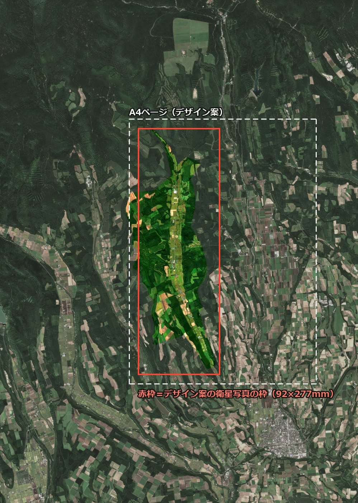
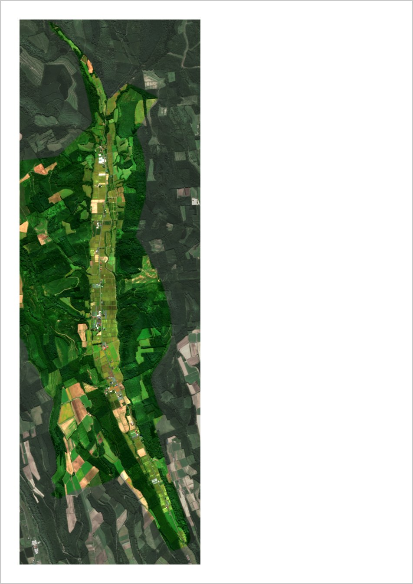

置杵牛 開拓120周年 記念誌
デザイン案（山側が上）の角度と縮尺はそのままに、前回お渡しした原画の縦横1.5倍の範囲を、360dpiで作り直しました。2025年9月5日の画像で、色の出し方も前回と同じです。
このページは公開していません。どこからもリンクしておらず、検索にも出ません。記念誌ができましたら削除します。

白い点線がA4ページ、赤い枠がデザイン案の衛星写真の枠（92×277mm）です。実際のファイルに線や文字は入っていません。
ダウンロード（11.6MB）輪郭を少しだけ締めた（シャープをかけた）版です。細部が増えるわけではありませんが、道や畑の境目がややくっきりします。構図・大きさは上と同じなので、お好みでどちらでもお使いください。
ダウンロード（13.5MB）
上の手順で置いたところです（右側の文字は省いています）。
出典：Contains modified Copernicus Sentinel data 2025（欧州宇宙機関 Copernicus Sentinel-2 のデータを加工して作成）
境界：「令和2年国勢調査 町丁・字等別境界データ」（総務省統計局）を加工して作成